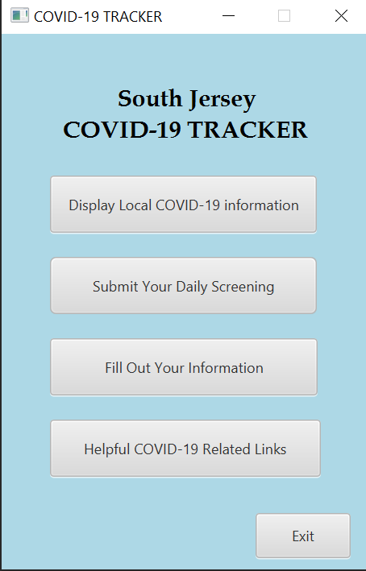

Evan Iovanisci
Published 17 May 2023
About Me
Hi my name is Evan, I'm a 21 year old Computer Science major from the United States currently studying abroad here at SIT. I’m in my 4th year of study at Rowan University, my University back home in New Jersey, USA. It has always been a dream of mine to be able to speak more than one language so I started taking Japanese language classes at my home university and when I heard about the opportunity to study abroad in Japan I knew I had to take it. I am loving my time here so far and can only imagine it getting even better from here.
My Hobbies
Some of my hobbies include fishing, snowboarding, hiking, dirtbike riding, cooking, playing video games, watching anime, and more. I also really enjoy taking pictures of everything I do so here are a few photos from some of my hobbies.
Previous Projects
Here are a few of the projects that I have worked on over the last couple of years in University. The first project is a Covid-19 Tracker application that shows Covid-19 data and information in the South Jersey area. The next one is a semester-long project that I worked on with 3 other group members. The second project is a FPS game mouse sensitivity converter that I made on my own time, it is very simple and was also coded in Java. The last project is another semester-long project that I worked on by myself called My Travels. It is a website where people can keep track of the countries they have visited and all of the countries they wish to visit. You can also upload all of the photos that you took in each country and see all of the photos that other people upload to the website.
Covid Tracker

Sensitivity Converter
My Website

My Country

Despite how often people (myself included) may joke about the US because of some of the crazy things that happen there, I still believe that it is a great country. The United States is a big country so it has lots of different cultures and environments which is one of the reasons why I think it’s great. When people think of American cuisine they may just think of hamburgers and hotdogs but there are plenty of good foods such as American Style BBQ, Jambalaya, Cheesesteaks, and much more.